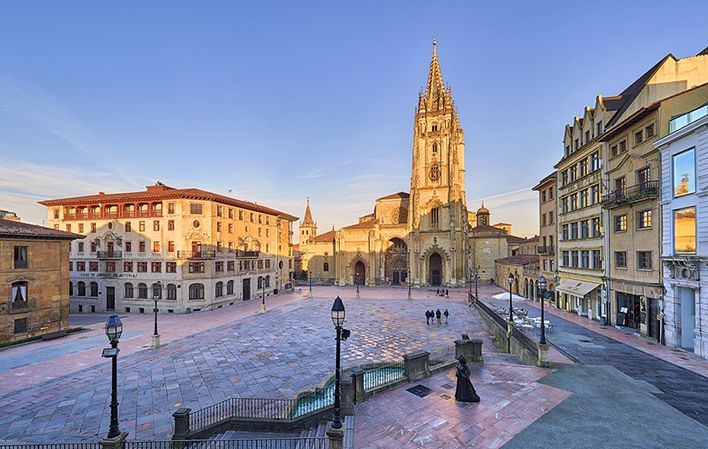

La autora de está página web ha creado este lugar con el único fin de analizar el progreso de sus conocimientos en frontend y mejorar poco a poco, al menos esa era la intención. Si este proyecto fuera a ver la luz del día significa que ha pasado (al menos) alguna de estas posibilidades:
La autora se ha animado a crear un espacio en donde compartir y documentar distintas cosas que le apasionan.
Ha perdido por completo la razón.
En cualquier caso, creo que ya va siendo hora de que me presente:
¡Hola! Mi nombre es Lucía y soy una estudiante de segundo año de la doble titulación en Matemáticas e Ingeniería Informatica en la Universitat Politècnica de Catalunya (UPC). A pesar de que en la actualidad resida en Barcelona me crié y crecí en Oviedo, Asturias, lugar al que le tengo mucho cariño.
Esta página web/blog es el fruto de mi deseo de dejar por escrito cosas que me gustarían compartir de distintas temáticas que variaran entre las matemáticas, la programación, historia, crochet o cualquier otra cosa de la que tenga un impulso irremediable de contar.
Para contactar conmigo o mirar otros proyectos en los que estoy interesada, ¡no dudes en mirar mis redes o mi cuenta de GitHub!


Some topics I have been recenly interested in: